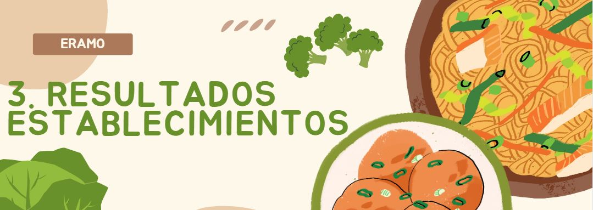

El siguiente contenido corresponde al análisis de los datos obtenidos en el operativo de la Prueba Piloto ERAMO 2021 para el cuestionario aplicado a los establecimientos o unidades económicas. Es importante mencionar que los resultados obtenidos no son considerados de carácter oficial ya que no provienen de una muestra estadísticamente representativa.
Como resultado del procesamiento de la información, se
identificaron 1,574 cuestionarios completos obtenidos en
establecimientos dedicados a la venta de alimentos.
Sobre estos registros es que se considerará nuestro universo de estudio, en el que, mediante un procesamiento analítico sobre las variables, se logró generar algunos indicadores y gráficos con la finalidad compartir y difundir los resultados obtenidos en esta prueba piloto 2021.
La distribución del tamaño de los establecimientos se basó en el número del personal ocupado, siendo más frecuente los establecimientos pequeños con un 83.5%, con rango del personal ocupado de 0 a 5 personas.
Los establecimientos entrevistados declararon que el 78.9% de sus productos son para consumo humano, 0.2% para consumo animal, el 20.4% para ambos tipos de consumo, el resto menciona que lo desconoce.
En lo que corresponde al mercado al que se destinan sus ventas o servicios, el 79.4% declaró como destino exclusivo el mercado nacional minorista, 2.5% exclusivamente al mercado nacional mayorista, el 0.3% totalmente extranjero y el 17.7% de los tres tipos.
En el caso del origen de los alimentos que se comercializan, la
mayoría de los establecimientos vende o presta servicios de alimentos de
origen nacional, representado con un 77.9%.
Como se observa en la siguiente gráfica, aproximadamente un 58.8% no lleva ningún registro en el desperdicio de alimentos. Del 37.7% que sí lleva un registro, el 66.2% lo realiza en bitacora y un 25.4% en un libro de excel.
La siguiente gráfica muestra el porcentaje de la frecuencia de productos alimenticios que manejó, almacenó, procesó, distribuyó, vendió y ofreció como servicio alimentario por establecimiento, siendo un 38.9% de estos que únicamente reportaron un solo producto y el 5.84% de establecimientos reportaron 10 o más productos.
Se logró captar información de 73 productos alimenticios distintos, la siguiente gráfica muestra la frecuencia de cada uno de los productos alimenticios reportados.
Gráfica de caja y bigotes que muestra los datos del promedio mensual del manejo de cada uno de los productos reportados.
De los 5,021 datos sobre los productos reportados en establecimientos, el 55.9% de los productos reportaron tener desperdicio.
La siguiente gráfica permite visualizar la proporción relacionada a la cantidad del manejo de alimentos con la cantidad reportada de desperdicio, correspondiendo un 10.7%.
En el siguiente gráfico se muestran los datos atomizados del porcentaje del desperdicio reportado por los informantes agrupado por producto alimenticio.
Masa de maíz y el Chayote son los productos que mayor porcentaje del desperdicio presentan, esto se debe a que son productos con poca representatividad y los unicos registros reportados muestran un elevado porcentaje de desperdicio (Ver gráfico 3.2.2 y 3.3.3).
Del total del desperdicio, un 32.4% era todavía comestible para otras personas.
Productos que fueron reportados como desperdicio pero aun eran comestibles para otras personas. Podemos ver jamaica, hierbas, soya, col, chayote entre otros.
El 15% del desperdicio que era todavía comestible para otras personas se destinó a los bancos de alimentos
El siguiente gráfico muestra el porcentaje de los productos que todavía eran comestibles y se destinaron a los bancos de alimentos. En un 100% tenemos las pastas y la soya, siguiendo el aceite vegetal con 94.6% y el pan blanco y dulce con aproximadamente un 30%.
Catálogo de causas definido para la codificación de la variable:
Deterioro debido a factores no antrópicos –> Factores biológicos, meteorológicos y químicos
Disminución de clientes y de ventas –> Incluye pandemia, cancelación de pedidos, competencia en el mercado, entre otros
Deterioro debido a factores antrópicos –> Mal manejo en: transporte; almacenamiento; procesamiento y trasformación; venta; servicios alimentarios; entre otros
Sobrantes y restos alimenticios –> Restos dejados por los comensales, recorte de productos, restos en maquinaria empleada
Partes no comestibles –> Grasa, huesos, cartílago, entre otros
Planificación inadecuada –> Compra, transporte, almacenamiento; procesamiento y trasformación; venta; servicios alimentarios; entre otros
Otras causas –> Procesos de descongelación, gusto
- preferencias, eventos inesperados, rezago
La siguiente gráfica muestra el porcentaje de la causa principal de
desperdicio, respeto al volumen de cantidad total de desperdicio, siendo
la disminución de clientes de ventas la de mayor porcentaje con un
33.5%, siguiendo fecha de caducidad con un 26.6% y Deterioro debido a
factores no antrópico con un 18.5%, el resto de las causas fueron con
porcentajes menores al 6%.
La siguiente gráfica nos muestra el porcentaje de desperdicio para cada uno de los destinos reportados, respecto al volumen de la cantidad de desperdicio, siendo el banco de alimentos con mayor volumen de acuerdo con lo reportado por los informantes, representando un 24.13%, siguiendo el destino de lo regaló con un 23.23%, y continuando el destino del basurero y relleno sanitario con un 21.39%.
Como otro destino tenemos: incineración, robo, almacenamiento, trampas de grasa.
La carne de res, de cerdo, el pollo y el jitomate fueron los productos con mayor vólumen de desperdicio cuyo principal destino fue al basurero / relleno sanitario.
La leche,los refrescos, jugos y nectares envasados, galletas y cereales, fueron los productos con mayor vólumen de desperdicio cuyo principal destino fue al alcantarillado.
Poco más de la mitad de establecimientos encuestados han tomado medias para evitar o disminuir el desperdicio, principalmente planeando una justa y adecuada compra y preparación de productos, así como la aplicación de buenas prácticas.
Un 58.7% de establecimientos si han tomado medidas para evitar o disminur el desperdicio de alimentos
La siguiente gráfica muestra las medidas que han tomado los establecimientos para evitar y/o disminuir el desperdicio.